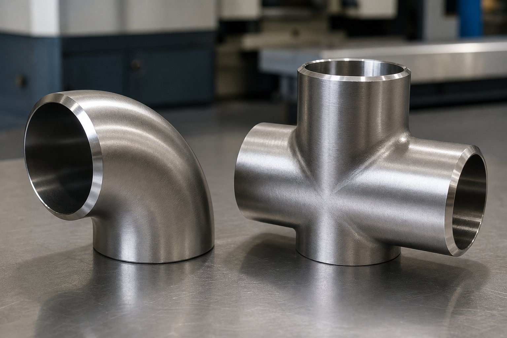

جایگاه استاندارد اتصالات استنلس
این استاندارد، مشخصه اتصالات جوشی لببهلب از جنس فولاد زنگنزن آستنیتی و فریتی را پوشش میدهد. ابعاد این اتصالات تابع همان مرجع ابعادی اتصالات جوشی است، اما متریال و عملیات حرارتی مخصوص استنلس دارند.

گریدهای اصلی
| گرید | ویژگی | کاربرد |
|---|---|---|
| ۳۰۴ | عمومیترین گرید استنلس | سرویس خورنده ملایم |
| ۳۰۴ کمکربن | مقاومت بهتر پس از جوشکاری | خطوط جوشکاریشده |
| ۳۱۶ | حاوی مولیبدن | محیطهای کلریدی |
| ۳۱۶ کمکربن | مولیبدن و کربن محدود | سرویسهای خورنده جوشکاریشده |
روش ساخت و عملیات حرارتی
- شکلدهی از لوله یا ورق استنلس بسته به سایز.
- جوشکاری کنترلشده در اتصالات بزرگ.
- عملیات محلولسازی پس از شکلدهی و جوشکاری.
- تمیزکاری و حذف آلودگیهای آهنی از سطح.
- بازرسی ابعادی و چشمی پیش از تحویل.
بازرسی و ردیابی
شباهت ظاهری گریدهای استنلس، کنترل ردیابی را حیاتی میکند:
- تطابق حک گرید روی اتصال با گواهی مواد.
- کنترل شماره ذوب در مدارک.
- در پروژههای حساس، تست شناسایی مثبت متریال.
- جداسازی انباری از اتصالات کربنی برای جلوگیری از آلودگی.
نکات خرید
- گرید را دقیقاً همگرید لوله انتخاب کنید.
- برای خطوط جوشکاریشده در سرویس خورنده، نسخه کمکربن را ترجیح دهید.
- وضعیت عملیات حرارتی را در گواهی مواد بخواهید.
- بستهبندی جداگانه از کربنی را در قرارداد قید کنید.
ابعاد و تطابق با لوله
ابعاد این اتصالات تابع مرجع ابعادی اتصالات جوشی است و ضخامت دیواره آنها باید با لوله همبند هماهنگ باشد. در سایزهای بزرگ، کنترل بیضوی انتهای اتصال برای مونتاژ بدون تنش اهمیت دارد. برای لولههای استنلس با سری ضخامت خاص، ذکر دقیق ضخامت در سفارش الزامی است.
سرویسهای بهداشتی
- در صنایع غذایی و دارویی، پرداخت سطح و تمیزی داخلی اهمیت ویژه دارد.
- حذف آلودگیهای آهنی و تمیزکاری شیمیایی در صورت نیاز انجام شود.
- بستهبندی جداگانه از اتصالات کربنی الزامی است.
- کنترل سطح داخلی پیش از مونتاژ در مدار بهداشتی.
چکلیست استعلام
- گرید اتصال را دقیقاً همگرید لوله ذکر کنید.
- نوع و سایز و ضخامت را مشخص کنید.
- وضعیت عملیات حرارتی را بخواهید.
- گواهی مواد با شماره ذوب درخواست کنید.
- در پروژههای حساس، تست شناسایی مثبت متریال را اضافه کنید.
- بستهبندی جداگانه از کربنی را قید کنید.
در پروژههایی که متریال استنلس در مجاورت سازههای کربنی نصب میشود، استفاده از تکیهگاه و واسطهای جداکننده برای جلوگیری از آلودگی و خوردگی تماسی ضروری است.
جمعبندی
اتصالات استنلس با گرید همخوان و عملیات حرارتی صحیح، یکپارچگی مقاومت به خوردگی خط را حفظ میکنند. ردیابی دقیق، کلید جلوگیری از اختلاط گریدهاست.
سوالات رایج
این اتصالات با کدام لوله همخوان هستند؟
با لولههای استنلس آستنیتی همگرید؛ برای مثال اتصال گرید ۳۱۶ با لوله گرید ۳۱۶. همخوانی گرید برای یکپارچگی مقاومت به خوردگی در کل خط الزامی است.
روش ساخت این اتصالات چیست؟
بسته به سایز، از لوله یا ورق استنلس با شکلدهی ساخته میشوند؛ اتصالات کوچک معمولاً بدون درز و اتصالات بزرگ با جوش کنترلشده. پس از شکلدهی، عملیات محلولسازی انجام میشود.
چرا عملیات محلولسازی اهمیت دارد؟
شکلدهی و جوشکاری میتواند کاربیدها را رسوب دهد و مقاومت به خوردگی را کاهش دهد. محلولسازی، ساختار را بازسازی میکند و باید در گواهی مواد قابل ردیابی باشد.
چطور از گرید اتصال مطمئن شویم؟
تطابق حک روی اتصال با گواهی مواد و در موارد حساس تست شناسایی مثبت متریال. شباهت ظاهری گریدهای استنلس، ریسک اختلاط را بالا میبرد.
مطالب مرتبط
- راهنمای لوله استنلس (ASTM A312)
- مقایسه استنلس ۳۰۴ و ۳۱۶
- راهنمای اتصالات جوشی لببهلب (ASME B16.9)
- فورج استنلس (ASTM A182)
- راهنمای تست شناسایی مثبت متریال
با ذکر گرید، نوع و سایز، اتصال همگرید با لوله به همراه گواهی مواد و وضعیت عملیات حرارتی عرضه میشود.
مشاهده صفحه محصول ← ثبت RFQ همین محصولتامین این تجهیزات را به پیشرو تجهیز فرتاک بسپارید
شرکت پیشرو تجهیز فرتاک تامینکننده تخصصی تجهیزات صنعتی برای پروژههای نفت، گاز، پتروشیمی، فولاد و نیروگاهی است. برای دریافت پیشنهاد فنی و قیمت، استعلام (RFQ) خود را ثبت کنید تا کارشناسان مهندسی فروش در کوتاهترین زمان پاسخ دهند.
- تامین اتصالات استنلسخانواده کامل اتصالات ۳۰۴ و ۳۱۶
- تامین تجهیزات پایپینگلوله و فلنج استنلس همگرید